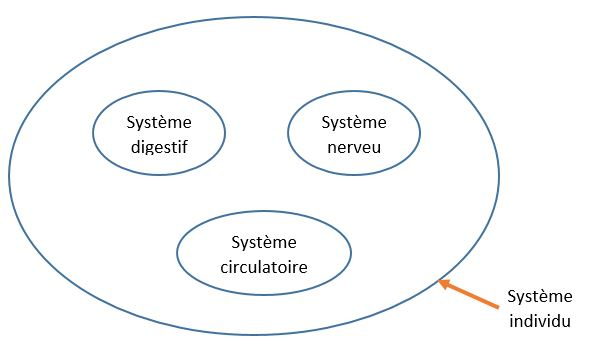
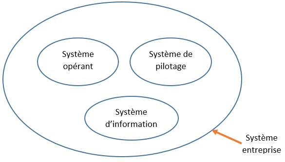

Si vous avez cliqué sur le lien qui mène à cette page, c'est que vous voulez savoir c'est quoi les
bases de données. Et croyez-moi, vous êtes au bon endroit. Nous allons pas à pas découvrir c'est quoi
les bases de données et à quoi ça sert.
Ce que je vous propose, c'est de partir de ce que vous savez déjà pour savoir ce que vous ne savez pas.
Vous acceptez ? D'accord, allonz-y !
Les bases de données nous permettent d'étudier un système ?
Ah oui, vous avez raison. ça mérite plus d'exploitation. D'abord, voyons c'est quoi un système ?
Un système est un tout constitué d'éléments. Par exemple, on peut considérer un individu (vous par exemple),
comme un système. En effet, un individu est constitué de plusieurs éléments: des cellules, des tissus, des organes,
des systèmes,... Vous comprenez maintenant c'est quoi un système ?
Voici un second exemple: l'entreprise en tant que système. L'entreprise est aussi constituée de plusieurs éléments
(domaines, services,...) qui communiquent entre eux pour former un tout.
Maintenant, revenons sur l'individu (qui est un système). Vous savez que l'individu est un être trè complexe, c'est pourquoi pour faciliter l'étude, ou pour comprendre ce système (l'individu), les scientifiques ont créé une discipline qui s'appelle l'anatomie. Cette discipline permet d'étudier les differents éléments (organes, appareils,...) qui constituent l'individu.
Par analogie, pour étudier l'entreprise (qui est aussi un système), les informaticiens ont mis en place une discipline
qui s'appelle les bases de données.
Les bases de données permettent de représenter (modéliser) une réalité à travers des modèles, afin de réduire la complexité
de cette réalité. Sans les bases de données, réaliser et gérer un projet informatique devient très difficile et long.
Dans notre exemple précédent, nous avons vu que l'individu est un système. Et dans ce système il ya des éléments
qu'on peut aussi appelé sous système. Pour que ça soit plus clair, regarder ce schema:

Par conséquent, en base de données, nous avons un système qui contient des systèmes ou sous-systèmes (voir le
schema ci-dessous). Dans un système, nous avons donc:
- le système de pilotage;
- le système d'information;
- le système opérant.

voyons en détail le rôle de chaque système.
Vous vous rappelez ? Nous venons de dire que le système de pilotage, c'est le système qui permet de prendre des décisions . En effet, les dirigents d'une entreprise doivent à tout moment prendre des décisions. Et ces décisions impactent la réussite ou l'echec de l'entreprise.
- Vous savez que les bases de données permettent d'étudier et aussi de gérer des projets informatques;
- Nous avons dans un système donné, trois types de systèmes:
C'est tout pour ce tutoriel j'espère qu'il vous sera utile, si c'est le cas, n'oubliez pas de le partager à votre entourage. Et pour aller loin, visitez ma chaine Youtube "apprendreetenseigner" où vous trouverez plusieurs vidéos.
Auteur: Yéro Bhoye Sow (Technicien informatique, freelanceur).